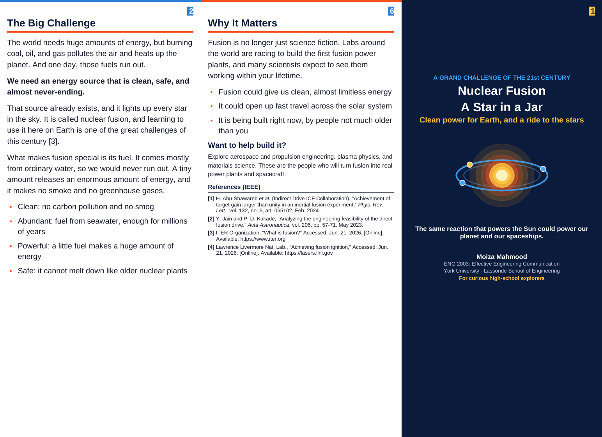
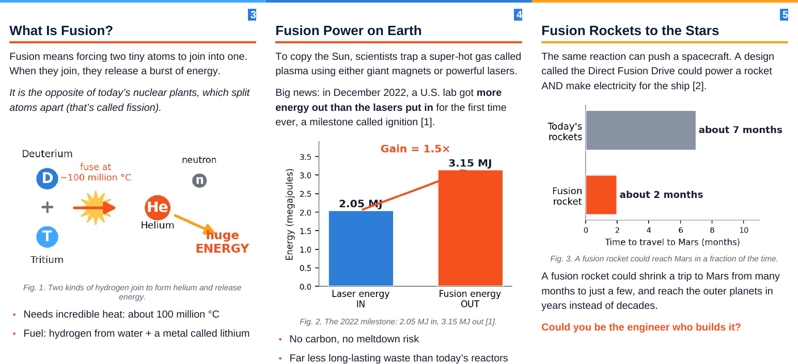
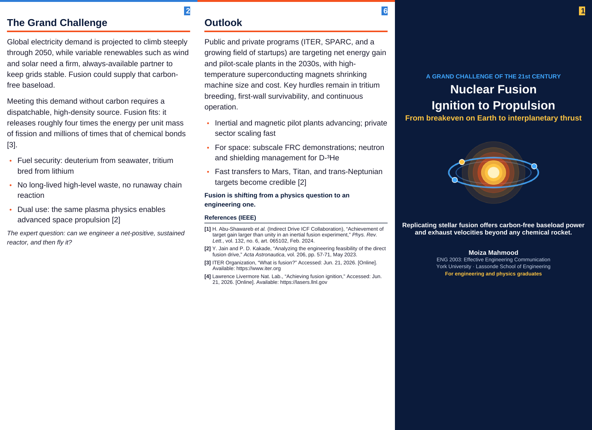
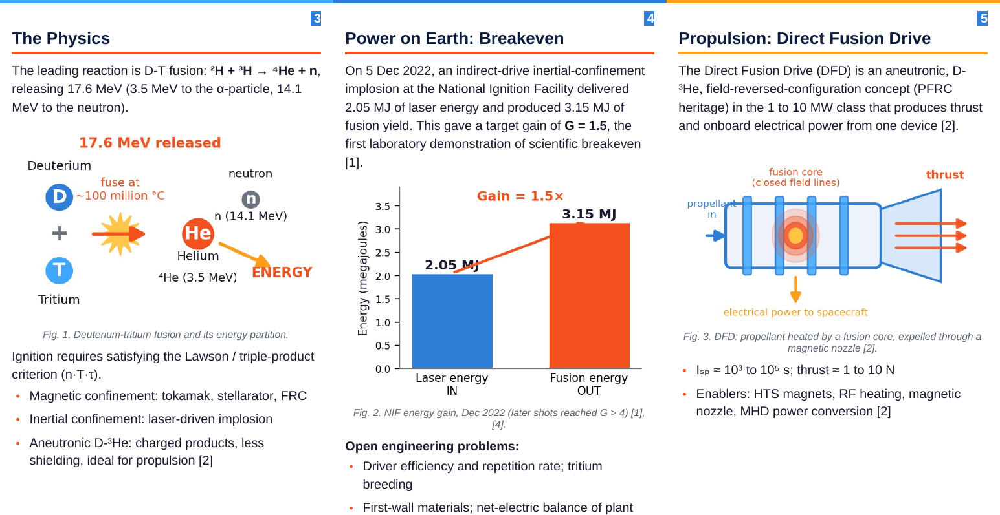
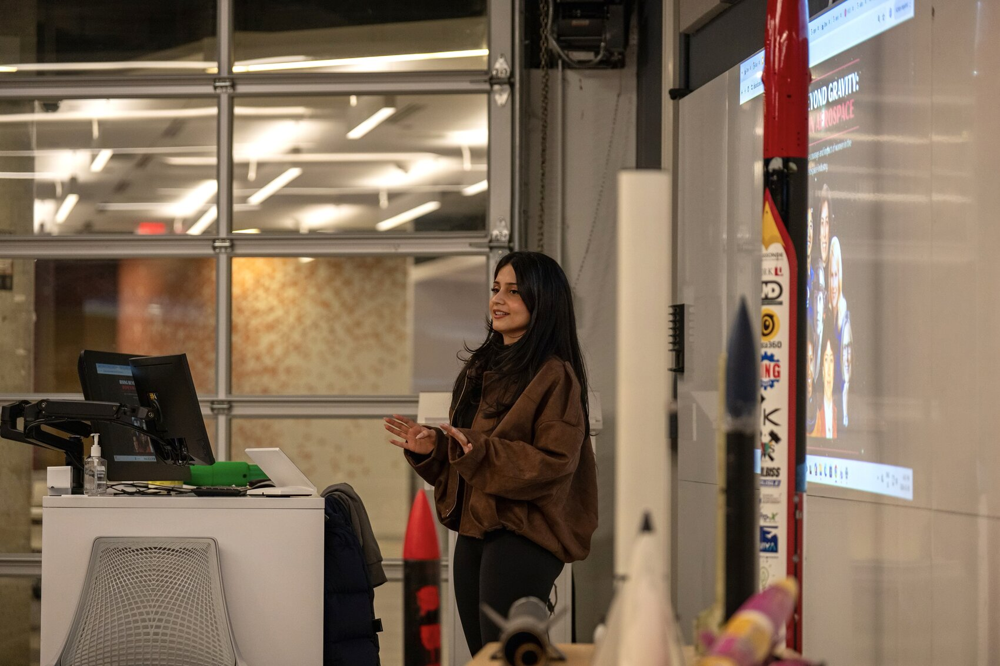
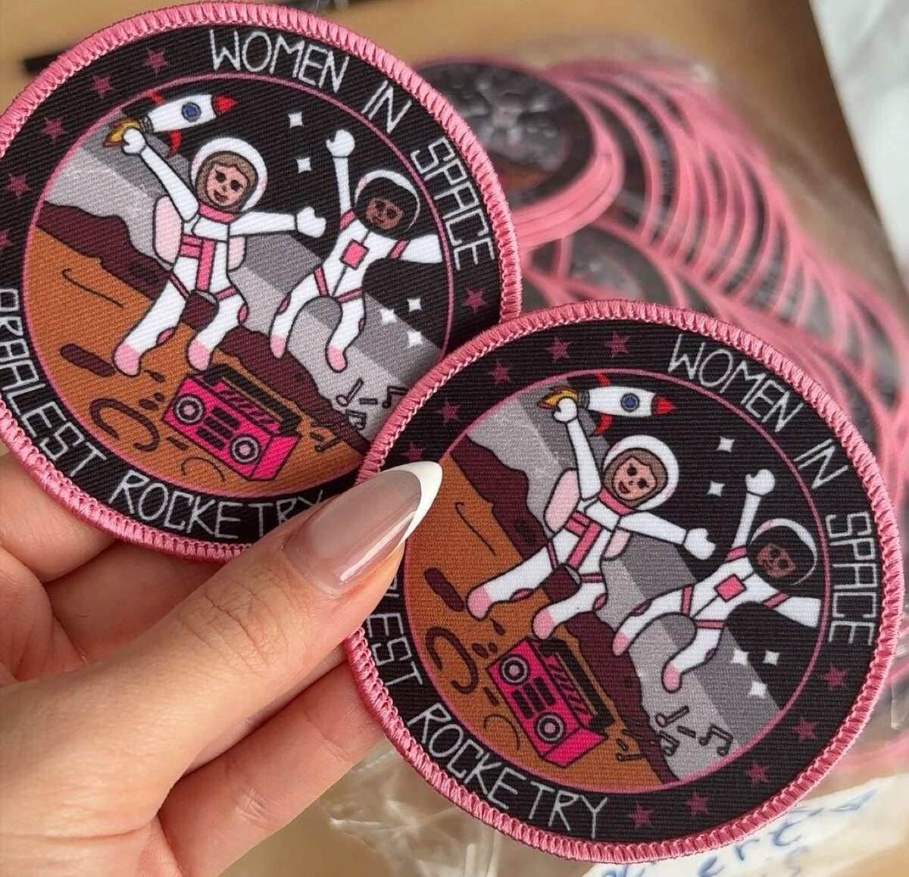
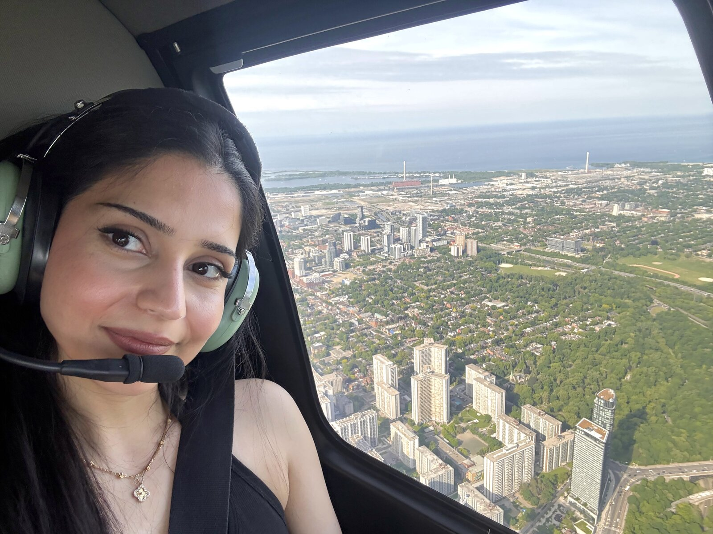
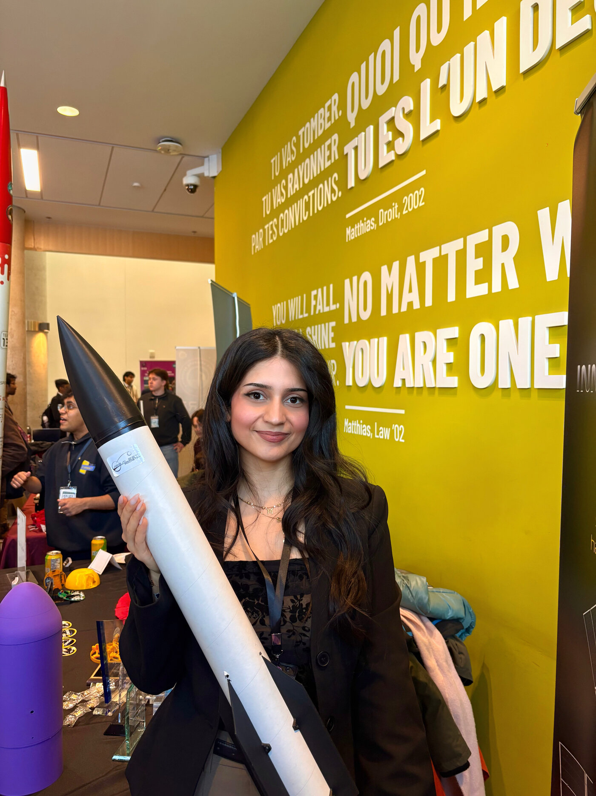
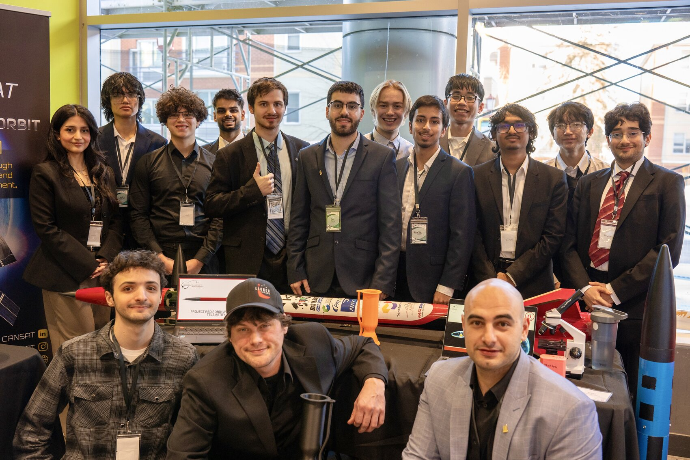

Space Engineering student · Pilot in Training · Medical Interpreter · Equestrian · Multilingual STEM professional — building rockets and communicating hard science clearly.
Four pieces that best reflect how I've grown as a communicator this year — three from ENG 2003, and one from my work outside the classroom. Each entry explains the piece, then reflects on what it taught me.
A tri-fold brochure on Direct Fusion Drive (DFD) propulsion — a nuclear-fusion concept for deep-space missions — produced in two audience-tailored versions: one for curious high-school explorers, and one for engineering and physics graduates. Same science, pitched two ways — plain-language storytelling and visual hierarchy for the first; precise reactions, figures, and engineering trade-offs for the second. Refined across multiple revision rounds.




A formal technical report on the DFD concept, structured for a technical reader: clear problem framing, organized sections, supporting evidence, and precise engineering language. Where the brochure simplifies, this piece demonstrates rigorous, complete technical writing — the other end of the audience spectrum. Developed through several rounds of revision and feedback.
Instructional materials that teach the DFD concept step by step — tutorial worksheets paired with a Whitesides-method outline. This piece shows a third communication mode: instructional design, where the goal is to guide a learner to understanding, sequencing information so each idea builds on the last.
An outreach event I conceived and organized to show students — especially young women — that careers in aerospace and STEM are within reach. Hosted with Arbalest Rocketry at York University, it featured an industry panel, a hands-on mission-design workshop, and a virtual guest from the Canadian Space Agency. Afterward I wrote the LinkedIn feature below — a personal, public piece of writing that blends storytelling, advocacy, and gratitude to communicate why the event mattered.


A few years ago, dreaming about working in the space industry felt impossible for me.
Growing up in Afghanistan, dreaming big as a girl was not always encouraged. Talking about space or engineering often sounded unrealistic to people around me. Many did not even know what the space industry was. Sometimes they laughed.
But I had a vision.
After immigrating to Canada and facing many challenges, I held on to that vision. Today I am an undergraduate student studying Space Engineering at York University, and I know that the opportunities I have now are something many girls around the world are still fighting for.
That is why organizing Rising Beyond Gravity: Women in Aerospace meant so much to me. This event was about showing students, especially young women, that careers in aerospace and STEM are possible.
I am very grateful to everyone who helped make this event possible.
Thank you to the Arbalest Rocketry Team for supporting and helping organize the event. Thank you to Dean Jane Goodyer for her inspiring remarks. A huge thank you to our industry panelists Josea Tarulli, Matilda Khoshaba, and Aleeza Batool for sharing their journeys from being students to working in the space industry — hearing their experiences and advice was incredibly inspiring. A special thank you to Aleeza Batool for leading a hands-on workshop that allowed students to explore how engineering decisions are made for space missions.
Thank you to Professor Mike Daly for supervising this event, and Professors Sunila Akbar and Cuiying Jian for their support and contributions. And a very special thank you to Zara Faux for supporting this event and introducing me to Rebecca Marrone, M.Eng. from the Canadian Space Agency, who joined us virtually and shared her experience.
For me, Rising Beyond Gravity was more than just an event. It was the beginning of a vision to spread awareness and help more women and girls believe that they can pursue their goals.
If my journey can inspire even one girl to believe that space is within her reach, then this mission has already begun.
A two-part reflection on my experience in ENG 2003 and my growth as a communicator (500–1,000 words total). Draws on the Axioms of Communication and the 7 C's, with examples from my own work.
Going into ENG 2003, I expected a communication course to be mostly about grammar and writing essays. It turned out to be very different, and a lot more useful. Most of the work was hands-on and built around real deliverables, which is how I learn best. Instead of writing about communication, I was actually doing it — designing, drafting, getting feedback, and revising until the message worked.
The most useful part for me was audience analysis and the 7 C's. Learning to think about who I am writing for, before writing a single line, changed how I approached every task. The clearest example is my fusion project. I built the same Direct Fusion Drive topic into two completely different brochures: one for curious high-school explorers, and one for engineering and physics graduates. Same science, pitched two ways. The high-school version used plain language and simple visuals; the technical version used real reaction equations, figures, and engineering trade-offs. I could not have done that without putting the audience first.
The topic I found most interesting was how much design and layout are part of communication, not just decoration. My Phase 2 report showed me that structure and completeness matter as much as the words — if the reader cannot follow the order of ideas, the message is lost, no matter how correct it is. The tutorial worksheets pushed this further, because teaching a concept forces you to sequence every idea so each one builds on the last.
The course also made one of the communication axioms real for me: you cannot not communicate. Even spacing, headings, and colour send a message before anyone reads a word. Once I saw that, I stopped treating layout as an afterthought and started treating it as part of what I was trying to say.
Before ENG 2003, my communication strengths were mostly spoken. I speak eight languages and work as a medical interpreter, so I was already used to listening carefully and carrying meaning accurately between people in real time, often under pressure. What I had less practice with was technical and visual communication on the page — writing reports, designing documents, and deliberately adjusting my writing for very different readers.
That is the area I improved the most. The two-audience brochure was the turning point: writing the same idea two ways taught me to control tone and register on purpose instead of by accident. My outreach for Rising Beyond Gravity was another example — reaching industry professionals and partners meant being clear, concise, and courteous in just a few lines, because busy people do not read long messages. And presenting at that event pushed my spoken communication into a more public, persuasive space than interpreting ever asked of me.
The skill I still want to work on is conciseness. My interpreter instinct is to over-explain so that nothing is missed, but in engineering writing, shorter is usually stronger. I am learning to trust the reader more and cut words that do not earn their place.
This will change how I approach my other courses and my work as an engineer. In propulsion, the best idea is worthless if you cannot explain it to a teammate, a reviewer, or someone deciding whether to fund it. Another axiom fits here too: every message carries both a content level and a relationship level. How I say something shapes whether people trust the work, not only whether they understand it — and that is a lesson I will carry well beyond this course.
The projects and pursuits that shape how I work — and the transferable skills they build.



Coordinating a student rocketry team — delegation, technical documentation, and keeping a group aligned under deadline.
Co-hosting a two-day conference and running outreach to industry partners — professional persuasion and relationship-building at scale.
Years of competition build the calm, precise decision-making under pressure that engineering fieldwork and launches demand.
Flight training is checklists, procedures, and split-second judgment — the same systems-and-safety mindset propulsion work runs on.
Working across languages sharpens audience awareness: the core skill behind every good piece of engineering communication.
Managing risk in an unforgiving environment — measured, deliberate action when the margin for error is thin.
My full profile — education, experience, and skills — lives on LinkedIn, kept public and up to date.